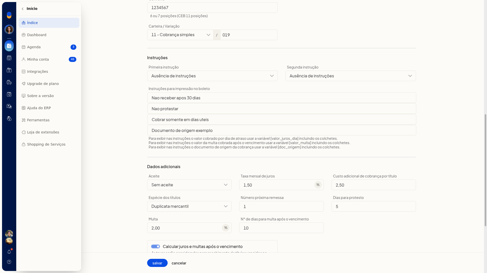

Contas bancárias e contas financeiras
No ERP da Olist, as contas financeiras entram no caixa e as contas bancárias reúnem os dados usados na cobrança. Você cadastra a conta financeira, indica se ela entra no saldo do fluxo de caixa e no saldo inicial do caixa, e informa o número dela na contabilidade. Na conta bancária, você registra banco, agência, conta, chave Pix e a emissão de boleto, inclusive a cobrança registrada.
Importante
- Beneficiário, contrato e convênio são informados pelo banco.
- Nenhum campo desses cadastros aparece marcado como obrigatório.
- Os dados de boleto com registro abaixo são os exibidos para Banco do Brasil com Emissão de boletos com registro (cobrança registrada).
Instruções
Cadastrar conta financeira
- Acesse Configurações > Configurações ERP > Finanças > Cadastro de contas financeiras.
- Clique em Incluir conta.
- Informe Nome da conta.
- Marque Não considerar esta conta no saldo para fluxo de caixa e no saldo inicial do caixa se a conta não deve entrar nesses saldos.
- Confirme o cadastro para gravar a conta. Cancelar devolve à lista sem gravar.
Informar o número da conta na contabilidade
- Na lista de contas financeiras, abra o menu de ações da linha.
- Clique em Informar número da conta.
- Preencha Número da conta na contabilidade.
- Confirme para gravar o número. Cancelar fecha a edição sem gravar.
Cadastrar conta bancária
-
Acesse Configurações > Configurações ERP > Finanças > Cadastro de contas bancárias.
-
Clique em Incluir conta bancária.
-
Em Banco, escolha uma opção: Olist Conta Digital, Banco Inter, Banco Safra, Banco do Brasil, Banco do Nordeste, Banrisul, Bradesco, Caixa (SICOB), Caixa (SIGCB), HSBC, Itaú, Santander, Sicoob, Sicredi, Unicred Integração RS ou Outro.
-
Informe Descrição da conta, a agência e o dígito no campo -, a conta e o dígito no campo -.
-
Em Conta financeira para o registro de lançamentos, selecione uma conta já cadastrada ou Criar nova conta.

-
Em Tipo da chave, escolha E-mail, CPF, CNPJ, Telefone ou Chave aleatória.
-
Informe a Chave Pix.
-
Em Configuração para cobrança como meio de recebimento, escolha Não emite boletos através desta conta, Emissão de boletos sem registro ou Emissão de boletos com registro (cobrança registrada).
-
Com Banco do Brasil e Emissão de boletos com registro (cobrança registrada), preencha o código do beneficiário e o dígito no campo -.
-
Preencha Contrato com até 20 posições. O valor serve apenas para a remessa.
-
Preencha Convênio com 6 ou 7 posições. No CEB, use 11 posições.
-
Em Carteira, escolha uma opção: 11 - Cobrança simples, 12 - Cobrança indexada, 15 - Cobrança de prêmios de seguro, 16 - Cobrança direta, 17 - Cobrança simples, 18 - Cobrança direta pré-impressa, 21 - Cecred, 31 - Cobrança caucionada/vinculada, 51 - Carteira descontada, 11 - Cobrança descontada, 11 - Cobrança vinculada, 17 - Cobrança descontada ou 17 - Cobrança vinculada.
-
Informe a Variação no campo /.
-
Em Primeira instrução e Segunda instrução, escolha: Ausência de instruções, Cobrar juros, Protestar no 3º dia útil após o vencimento, Protestar no 4º dia útil após o vencimento, Protestar no 5º dia útil após o vencimento, Protestar em n dias, Não protestar, Protestar no 10º dia corrido após vencimento, Protestar no 15º dia corrido após vencimento, Protestar no 20º dia corrido após vencimento, Protestar no 25º dia corrido após vencimento, Protestar no 30º dia corrido após vencimento, Protestar no 45º dia corrido após vencimento ou Conceder desconto só até a data estipulada. A segunda instrução tem as mesmas opções.
-
Preencha as quatro linhas de Instruções para impressão no boleto. Na última linha, para o juros diário, use a variável [valor_juros_dia], com os colchetes.
-
Em Aceite, escolha Sem aceite ou Com aceite.


- Informe Taxa mensal de juros e Custo adicional de cobrança por título.
- Em Espécie dos títulos, escolha Duplicata mercantil, Nota promissória, Nota de seguro, Recibo, Letra de câmbio, Warrant, Cheque, Duplicata de serviço, Nota de débito, Apólice de seguro, Duplicata rural, Dívida ativa da união, Dívida ativa do estado ou Dívida ativa do município.
- Informe Número próxima remessa, Dias para protesto, Multa e N° de dias para multa após o vencimento.
- Marque Calcular juros e multas após o vencimento se quiser usar as taxas em títulos vencidos. A tela informa que as taxas serão consideradas para recebimento de títulos vencidos no contas a receber e recebimento por cliente.
- Clique em salvar para gravar a conta bancária. Cancelar também fica disponível.

Informações adicionais
- As listas de contas financeiras e de contas bancárias oferecem incluir. Não há importar nem exportar planilha nessas listas.
- Na conta financeira, o menu da linha inclui Preferencial para movimentações, Informar número da conta, Inativar conta e Excluir conta.
- Na conta bancária, o menu da linha mostra Excluir conta bancária.